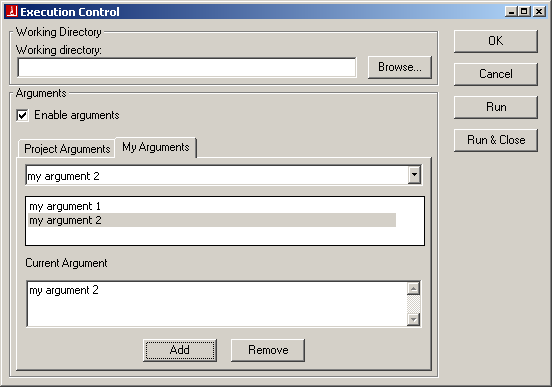
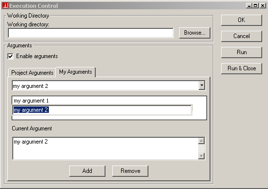

While working on a project, you may want to launch it with one or more arguments.
There are two ways to specify arguments for a program from EiffelStudio:
By right-clicking any of the debugging buttons in the debugging toolbar the following argument dialog will be displayed.

The dialog allows you to change the current working directory of the system, and to specify arguments to be passed to the system at execution time. New Program arguments may be added to the system and current ones can be removed or edited.
There are two tabs provided, Project Arguments and My Arguments. Project Arguments denotes all arguments in the system Ace file. Any changes performed in this tab will thus affect the contents of the Ace file. My Arguments denotes arguments for the current compilation. Since these arguments are compilation specific they are stored in a separate file and do not affect the system Ace file in any way. The main advantage of using this distinction is that it allows developers to specify their own custom arguments without affecting the Ace file. If the Ace file is shared between a number of developers then it need not be affected. Hence the argument dialog gives both project-level and user-level argument control.
To add a new argument simply type the argument in the Current Argument text area and click the Add button.
To remove an existing argument select the argument you wish to remove in either the drop-down list box or in the list and click Remove.
To edit an argument select the argument you wish to edit in the list and double-click it. This will display an editable text field in-place of the argument. Once done editing just click outside the list box. The picture below shows in-place editing of an argument.

Once the appropriate argument is selected then the system can be run with this argument using the Run or Run & Close button. The latter runs the system and also closes the argument dialog. To run without any arguments uncheck the Enable Arguments check box.